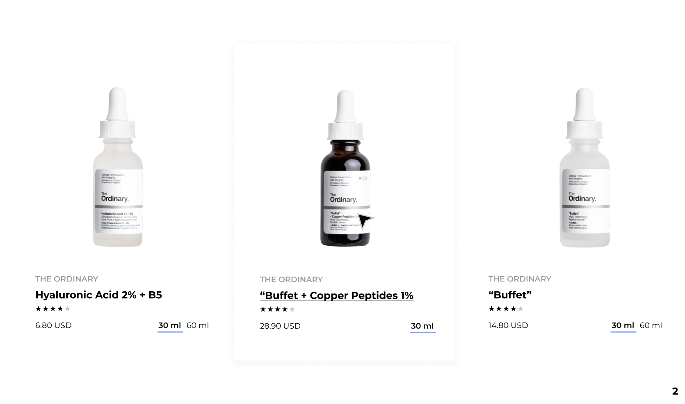
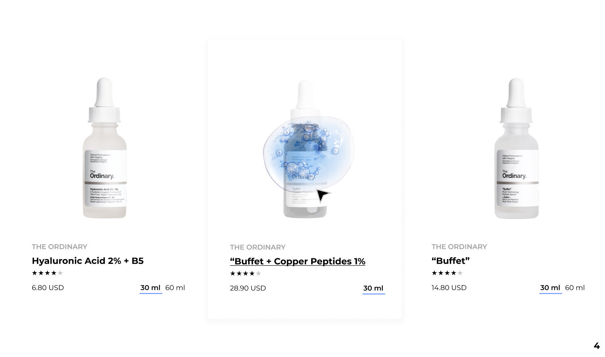
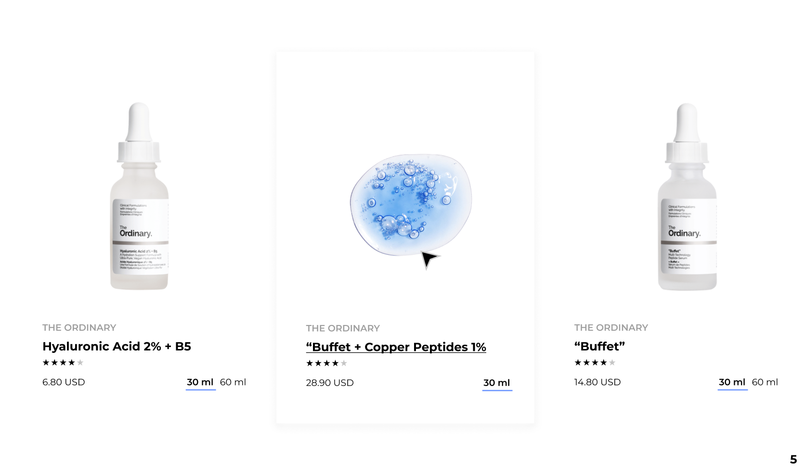
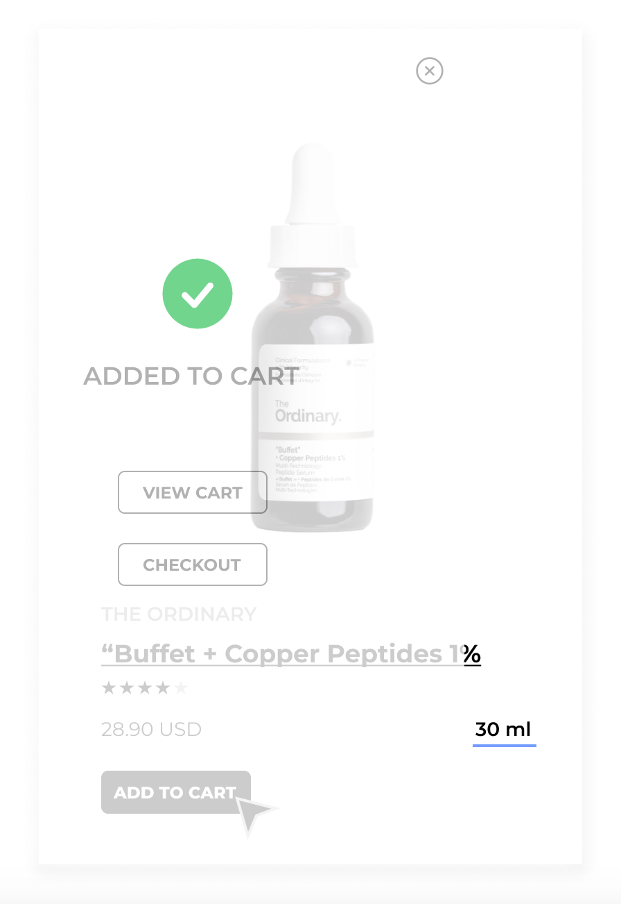
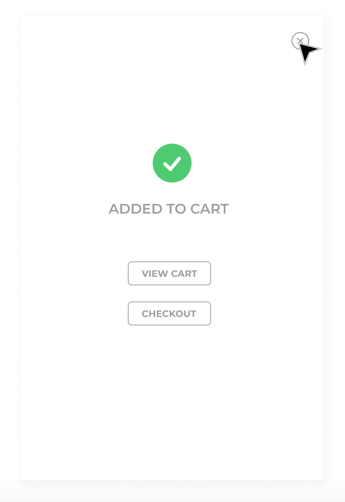
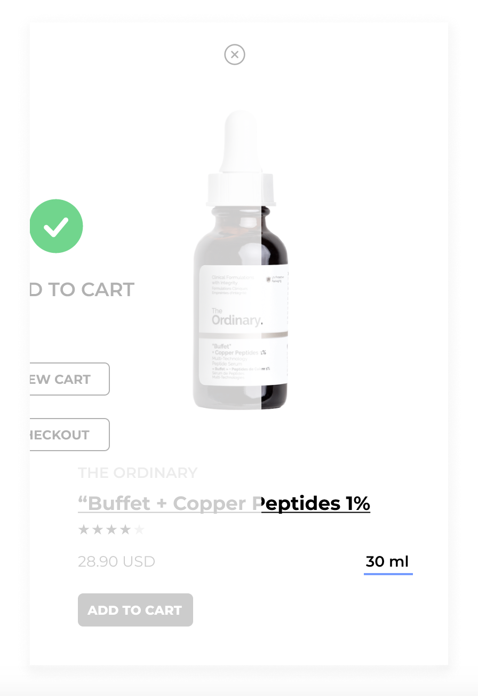
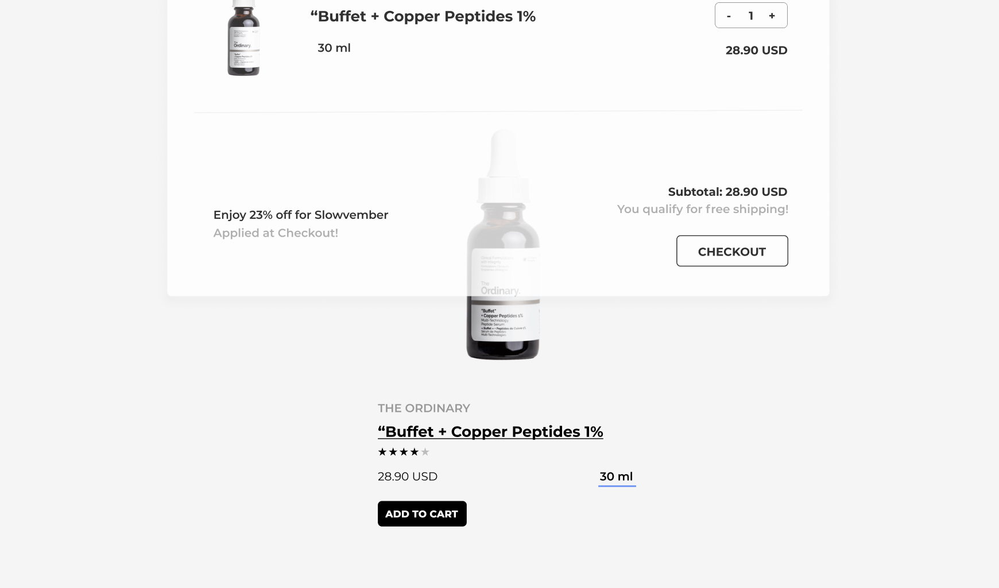
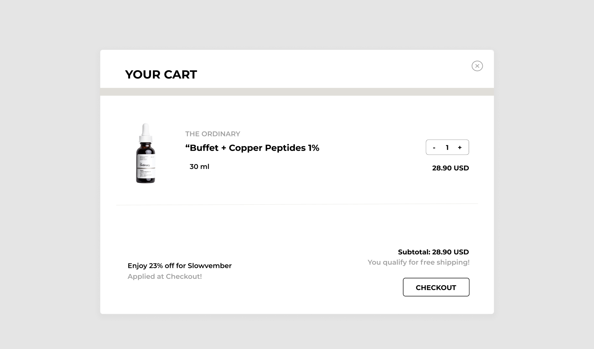
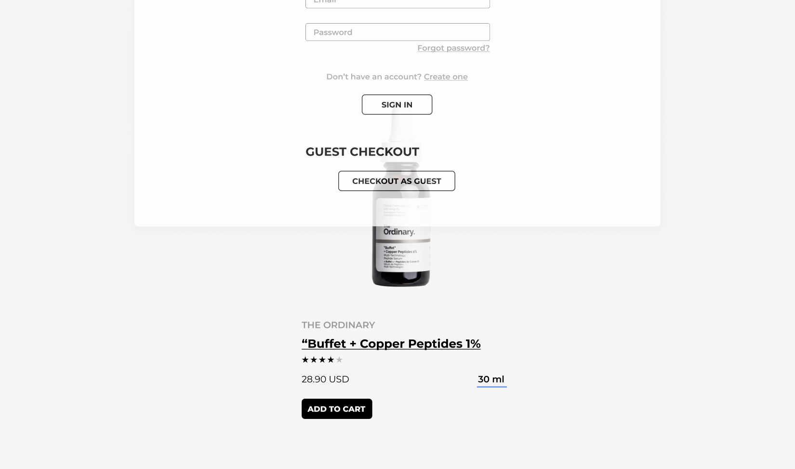
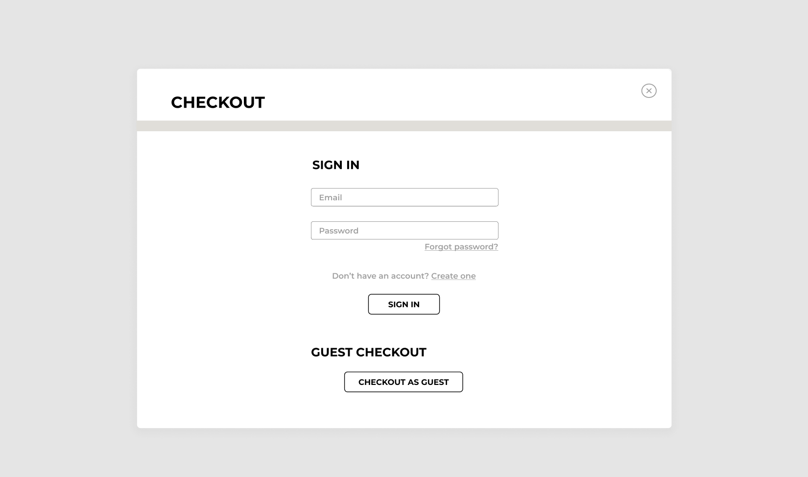

My goal for this project was to improve an existing microinteraction
on The Ordinary’s website. By staying conscious of branding and utilizing
existing code samples, I created a working sample of a microinteraction that
improves the task flow of the original website.
CONTEXT & CHALLENGE
Background
The Ordinary is a skincare company that focuses on providing quality and
authentic products to their customers. They are transparent with ingredients,
letting their customers know exactly what they are getting, and this is shown
through the way they name their products. For this project, I want to design
a microinteraction for their website that adds visual appeal and usability
that aligns with their brand values.
Problem
The Ordinary’s current website offers microinteractions that do not
necessarily impart a positive user experience. Many functionalities on the
website feel useless almost, or doesn’t reflect the more modern appearance
of the rest of the site.
Goals
For this particular project, I wanted to challenge myself and create a
microinteration using only HTML and CSS. I wanted to see how far I could
push CSS in regards to animating the interaction and was pleasantly surprised
with the results. Through this process, however, I found that many of the
working samples used JavaScript or SCSS in order to create their microinteractions
and did not fit with my personal project goals. It was also important to me that
my microinteraction would not complicate the user’s process or create additional
issues when integrated.
PROCESS & INSIGHT
My first steps in this project were thinking through exactly what I wanted to
change with their existing task flow. Currently, The Ordinary’s website has a
‘Quick View’ modal that appears over the image of the product on hover. I felt
that this prohibited the user from viewing the actual product, and instead forces
them to take additional steps in order to view the product. Additionally, the
‘Quick View’ modal just repeats information that the user would receive when
clicking on the actual product listing, and I wanted to add a feature that served
a different purpose for my microinteraction.
The Ordinary’s existing website also does not use any sort of animation during
their microinteractions. Because of this I decided I wanted elevate the experience
and create an interaction that is visually pleasing to the user. However, it was
important to me that the animations included in the interaction do not take away
or stick out from the simplistic nature of the website.
Alpha
For the alpha project, I wanted to include a hover state. When the user hovers
over the image of the product, a drop shadow would be applied to the card, the
product name would be underlined, and the image would transition to the next photo
of the product.



Beta
My beta includes an ‘Add to Cart’ button on the product card. When a user hovers
over the button, it fills with black and the text changes to white. When the user
clicks on the ‘Add to Cart’ button, a modal fades, telling the user that the item was
added to the cart. There are two additional buttons on this modal, giving the user an
option to either view their cart or check out. These buttons both have hover states,
filling with color and text changing colors as well.



Final
For my final, I included additional modals that are triggered by the buttons on the
‘Added to Cart’ modal. When the user clicks on the ‘View Cart’ button, a cart modal fades
in, it includes all the necessary information the user typically finds on a cart screen
and the user can toggle the quantity of the product. On the ‘Added to Cart’ modal, if the
user clicks the ‘Checkout’ button, a modal fades in, prompting the user to sign in or
check out as a guest. Both of these buttons have hover states, with a color fill and text
color is changed, but are inactive. The user can also input information into the Email and
Password field on the modal.




Challenges
One of my struggles in creating the design for this microinteraction was incorporating
the existing style of the website into it. The Ordinary’s branding consists of a black and
white color palette, with light gray accents. This particular style differentiated from ones
I am used to working with, and I had to take a minimalistic approach when using color in order
to stay aligned with their current branding.
I also struggled with stacking issues, in order to have the image transition from one photo
to another, they had to be stacked on top of each other for the transition to be seamless.
Referencing working samples and adjusting numeric values helped me fix this issue. When working
with multiple modals, I also had to be very organized with my naming conventions. A lot of the
time when I was working on them, the buttons would open the incorrect modal and I needed to
reorganize my code in order to fix this.
Many of the working samples I referenced for modals included JavaScript, which is something
I wanted to avoid. When I did find a CSS modal sample, it didn’t include transitions or work
properly in my code, so I did additional research so I could have my desired animations for it.
SOLUTION
I often found myself pulling from multiple different samples in order to create the different
functionalities I wanted. Although HTML and CSS are languages I am familiar with, I was also
learning new things about them from this project. By mapping out the current interactions offered
by The Ordinary’s website, I pinpointed changes I wanted to add when creating my own. I also stuck
to their current branding to stay true to the company’s well known aesthetic, but did modify some
aspects of it. I chose slightly different fonts and added a bright blue as an accent color, but was
used extremely sparingly within my design. With every additional layer of functionality added to my
microinteraction, I created prototypes for in figma. Doing so allowed me to solidify my design before
coding, which was a very straightforward and efficient way of working through it.
THE RESULTS
This project was successful to me because I felt that all my major goals were met. I made working
microinteractions using pure HTML and CSS, and all the functions I planned to include are functional.
When it came to any issues I had along the way, I am happy to say that I was able to troubleshoot and
solve them myself, and to me, that is a success.